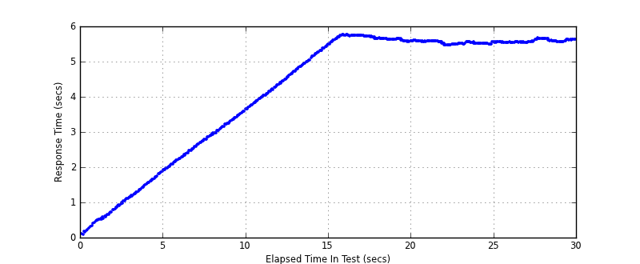
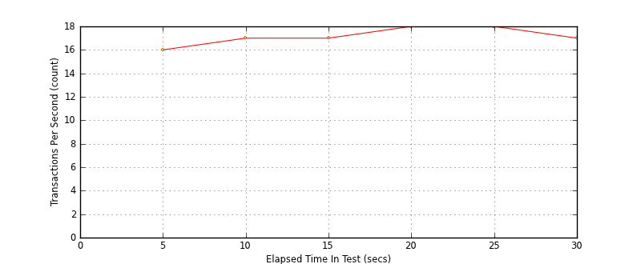
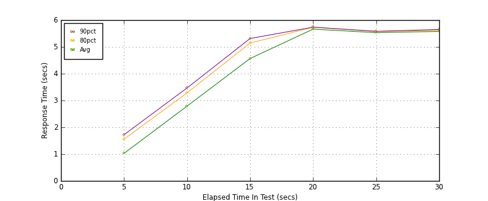

Performance Results Report
Summary
transactions: 622
errors: 0
run time: 30 secs
rampup: 10 secs
test start: 2014-01-15 15:30:15
test finish: 2014-01-15 15:30:45
time-series interval: 5 secs
workload configuration:
| group name | threads | script name |
|---|
| user_group-1 | 100 | read_user.py |
All Transactions
Transaction Response Summary (secs)
| count | min | avg | 80pct | 90pct | 95pct | max | stdev |
|---|
| 622 | 0.087 | 4.248 | 5.595 | 5.653 | 5.718 | 5.752 | 1.745 |
Interval Details (secs)
| interval | count | rate | min | avg | 80pct | 90pct | 95pct | max | stdev |
|---|
| 1 | 81 | 16.20 | 0.087 | 1.028 | 1.556 | 1.723 | 1.826 | 1.917 | 0.517 |
| 2 | 87 | 17.40 | 1.911 | 2.790 | 3.285 | 3.469 | 3.563 | 3.647 | 0.498 |
| 3 | 86 | 17.20 | 3.653 | 4.567 | 5.144 | 5.314 | 5.386 | 5.489 | 0.536 |
| 4 | 91 | 18.20 | 5.500 | 5.664 | 5.734 | 5.737 | 5.749 | 5.752 | 0.063 |
| 5 | 90 | 18.00 | 5.463 | 5.531 | 5.576 | 5.582 | 5.583 | 5.596 | 0.039 |
| 6 | 87 | 17.40 | 5.531 | 5.579 | 5.619 | 5.651 | 5.656 | 5.660 | 0.040 |
Graphs
Response Time: 5 sec time-series
Response Time: raw data (all points)

Throughput: 5 sec time-series

Custom Timer: get_tweets
Timer Summary (secs)
| count | min | avg | 80pct | 90pct | 95pct | max | stdev |
|---|
| 522 | 0.087 | 4.248 | 5.595 | 5.653 | 5.717 | 5.752 | 1.745 |
Interval Details (secs)
| interval | count | rate | min | avg | 80pct | 90pct | 95pct | max | stdev |
|---|
| 1 | 81 | 16.20 | 0.087 | 1.027 | 1.556 | 1.723 | 1.826 | 1.917 | 0.517 |
| 2 | 87 | 17.40 | 1.911 | 2.790 | 3.285 | 3.469 | 3.563 | 3.647 | 0.498 |
| 3 | 86 | 17.20 | 3.652 | 4.567 | 5.144 | 5.314 | 5.386 | 5.489 | 0.536 |
| 4 | 91 | 18.20 | 5.500 | 5.664 | 5.734 | 5.737 | 5.748 | 5.752 | 0.063 |
| 5 | 90 | 18.00 | 5.463 | 5.531 | 5.576 | 5.581 | 5.583 | 5.596 | 0.039 |
| 6 | 87 | 17.40 | 5.530 | 5.579 | 5.619 | 5.651 | 5.656 | 5.660 | 0.040 |
Graphs
Response Time: 5 sec time-series

Response Time: raw data (all points)

Throughput: 5 sec time-series